Ailes au repos : pose naturelle pour chaque créature
20/10 (suite) : vol plus naturel
Quatre façons de voler : oiseaux (Phénix, Aigle, Griffons, Pégases…), dragons et chauves-souris (grands battements lents), insectes (Bourdon, Fée Lumineuse : battement rapide) et Papillon, anges (battements amples et lents, corps droit). Le rythme suit la taille (petits rapides, grands lents) et varie un peu d'un individu à l'autre. Le battement est souple : descente puissante, remontée plus lente avec l'aile à moitié repliée, ralenti à chaque bout de course. Le bord de fuite suit l'épaule avec retard (l'aile ondule). Le corps monte à chaque coup d'aile et bascule un peu, la tête reste stable, la queue fait contrepoids. Les créatures qui filent tout droit planent de temps en temps.
Vidéo v3 (33 s), battements ralentis d'environ 25 % : vue d'ensemble, puis gros plans Dragon, Phénix, Pégase + Fée Céleste, Chauve-Souris + Papillon
20/10 : décision, les créatures ailées sont TOUJOURS en vol
On abandonne les ailes repliées. En jeu, une créature ailée qui s'arrête fait du sur-place en battant des ailes (plus lentement) au lieu de se poser. Dans les vitrines, sur les balcons et dans l'Index, elle vole sur place : ailes ouvertes qui battent, pattes repliées, léger flottement de haut en bas. Seul le Poussin (ailes minuscules) reste au sol. Le travail sur les ailes repliées ci-dessous est gardé pour mémoire.
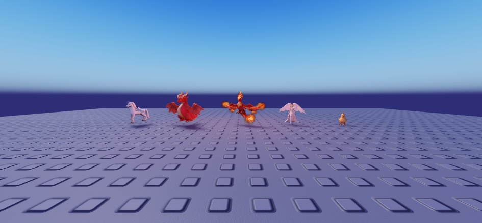
Pégase · Dragon · Phénix · Fée Céleste en vol sur place ; Poussin au sol
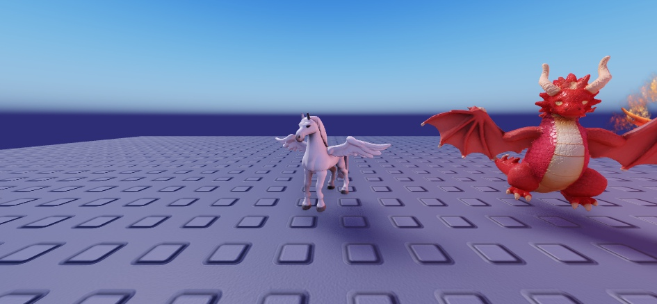
Pégase et Dragon, de plus près
Vidéo (20 s, Studio) : la caméra tourne autour du Pégase, du Dragon, du Phénix, de la Fée Céleste et du Poussin
(abandonné) Ailes repliées
20/10 : Fée Céleste corrigée
Ses ailes étaient dressées vers le haut : elle avait la pose des ailes d'insecte (Fée Lumineuse), alors que ses ailes sont à plumes, comme celles d'un ange. Elle a maintenant la même pose que l'Ange Lumineux et le Gardien Céleste : ailes qui tombent dans le dos, pointes vers le sol, sans toucher le sol.
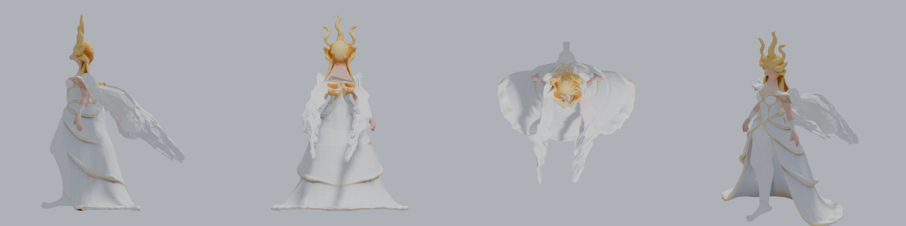
Fée Céleste au repos : profil · dos · dessus · trois-quarts
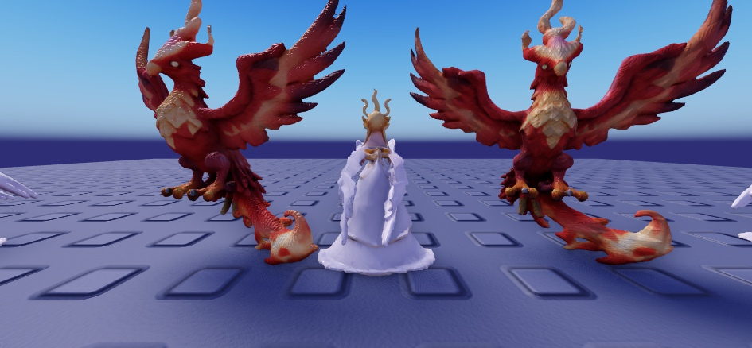
En jeu, de dos : ailes le long du dos
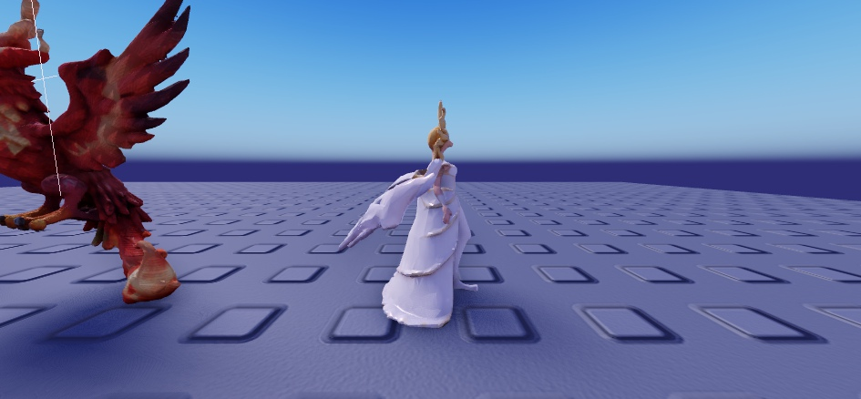
En jeu, de profil
Version 4 : chaque aile suit le dos de SA créature
Ce qui clochait encore en version 3 : toutes les ailes visaient la même direction (« vers l'arrière et un peu vers le bas »), quelle que soit la forme du corps. Résultat : chez les dragons assis, elles pendaient jusqu'au sol ; chez certains, elles traversaient le corps ou partaient en travers ; et le Griffon Céleste était même tourné à l'envers.
Maintenant, pour chaque créature, l'ordinateur essaie des centaines d'orientations de l'aile repliée et garde celle qui :
- suit la ligne du dos, de l'épaule vers la base de la queue (presque à plat chez les lions, chevaux et sphinx ; en pente chez les oiseaux et les dragons assis) ;
- reste plaquée contre le corps sans le traverser, avec le bout de l'aile qui ne s'écarte pas ;
- ne touche jamais le sol.
J'ai vérifié les 38 créatures une par une, de profil, de dos et de dessus (planches ci-dessous), puis en jeu. Le Griffon Céleste est remis dans le bon sens.
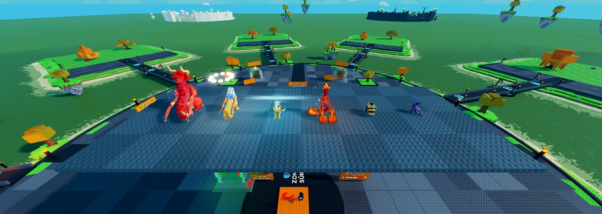
En jeu, de dos : Dragon · Sphinx · Griffon Céleste · Phénix · Bourdon · Chauve-Souris
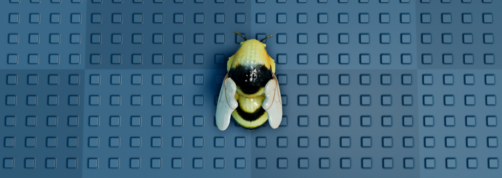
Bourdon vu de dessus : ailes rangées sur le dos
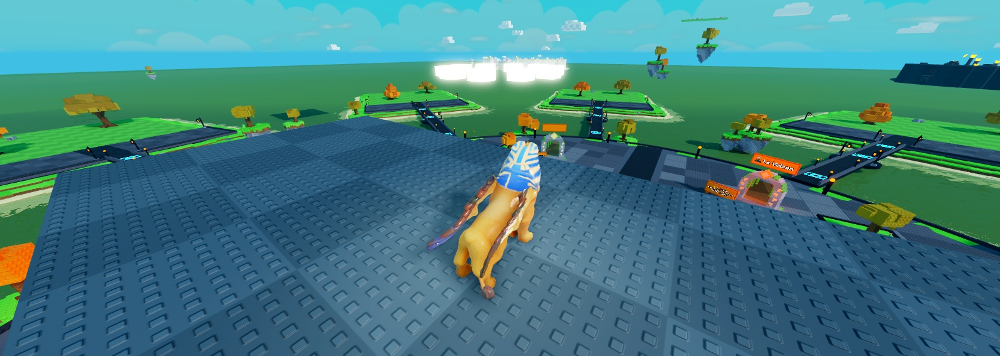
Sphinx Doré : ailes le long du dos
Les 38, au repos (profil · dos · dessus)
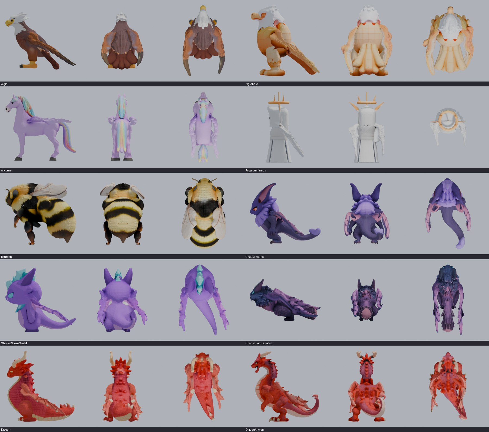
Aigle → Dragon Ancien
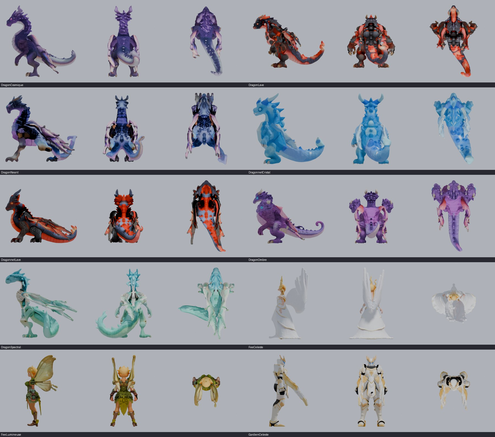
Dragon Cosmique → Gardien Céleste
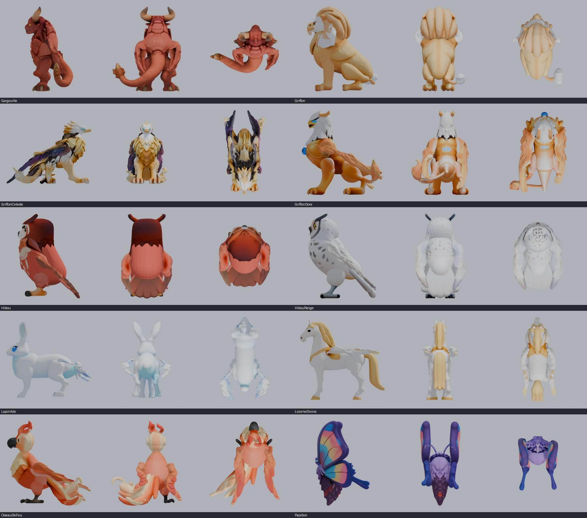
Gargouille → Papillon
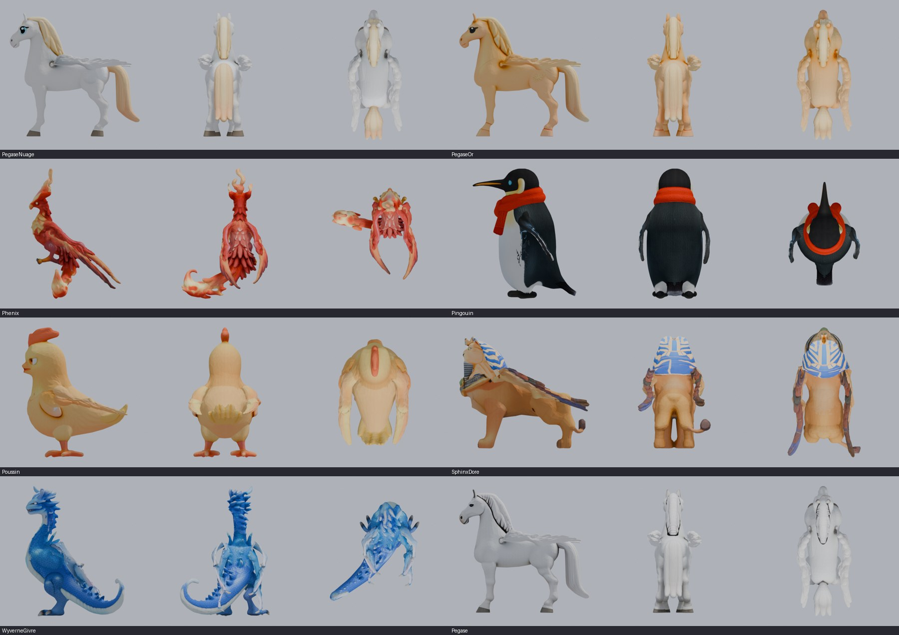
Pégase des Nuages → Pégase
(version 3) l'aile se referme comme un éventail
Mon erreur : je faisais seulement pivoter l'aile entière à l'épaule, toujours grande ouverte (version 1), puis je l'ai pliée comme un bras au coude et au poignet (version 2). Un vrai oiseau ou un vrai dragon replie ses ailes autrement : les plumes ou les doigts de la membrane glissent les uns sur les autres et l'aile se referme comme un éventail, pour former un panneau étroit rangé contre le flanc, la pointe vers la queue. Sur nos modèles, plier au coude écrasait la peau en boule.
Maintenant, chaque aile est découpée en 6 secteurs autour de l'épaule. Au repos, l'aile se couche le long du flanc et les 6 secteurs se referment l'un sur l'autre, les plumes du bord arrière par-dessus, comme sur un vrai oiseau. En vol, l'éventail se rouvre et l'aile bat comme avant.
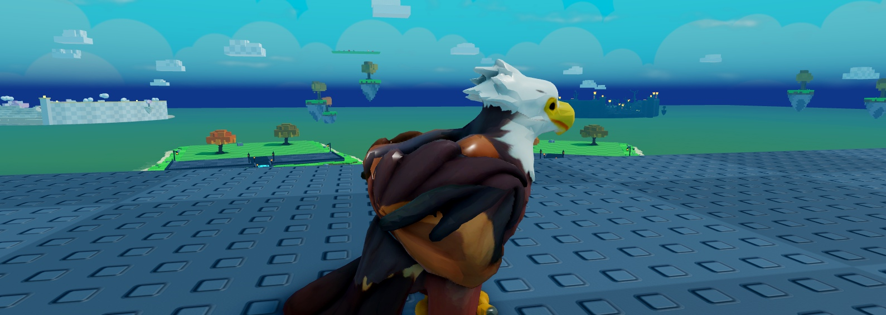
Version 2 (refusée) : aile pliée en Z, la peau s'écrase en boule
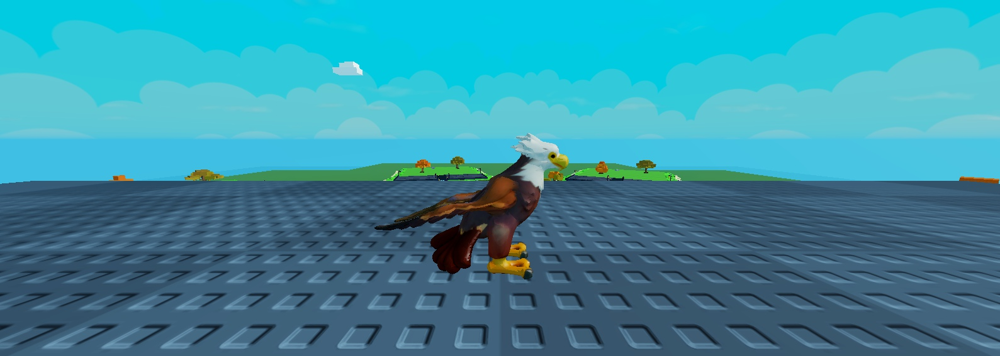
Version 3 : aile refermée le long du dos, pointe vers la queue
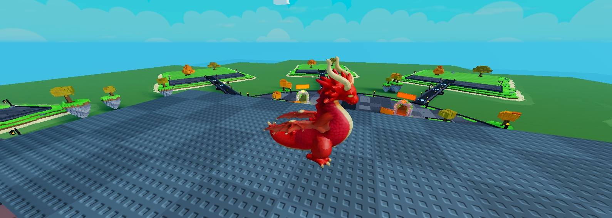
Dragon : aile repliée contre le flanc
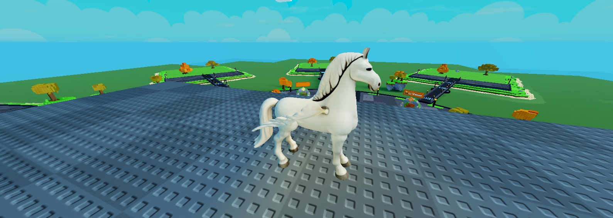
Pégase
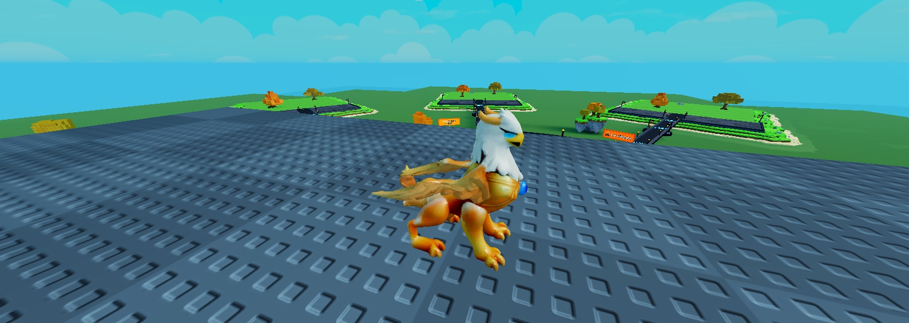
Griffon Doré
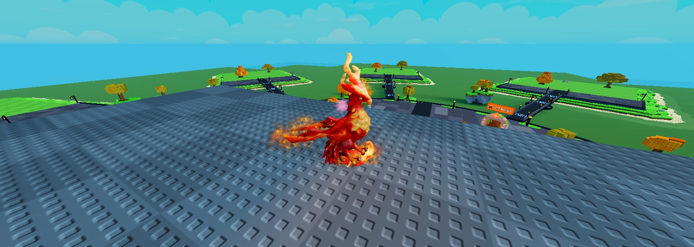
Phénix au repos (les flammes restent au bout des ailes)
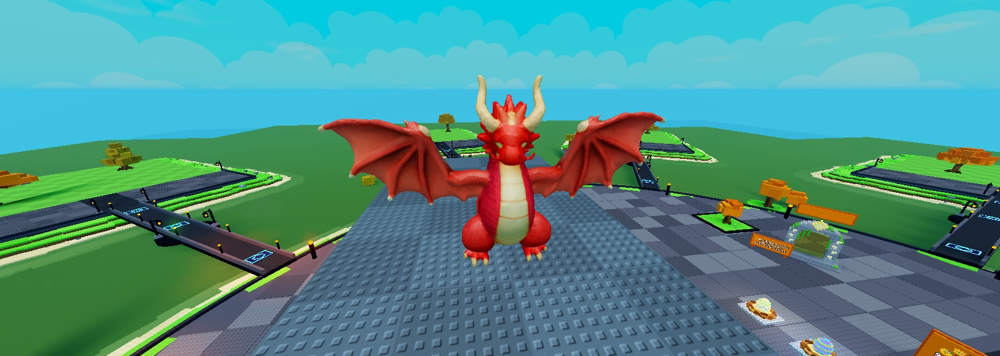
En vol : l'éventail se rouvre
Les 38 créatures ailées, au repos (profil · dessus)
Oiseaux, dragons, chevaux ailés, griffons, chauves-souris : ailes le long du flanc. Papillon : ailes dressées et serrées au-dessus du dos. Fées : ailes relevées en V. Bourdon : ailes à plat sur le dos. Ange et gardien : ailes tombantes dans le dos.
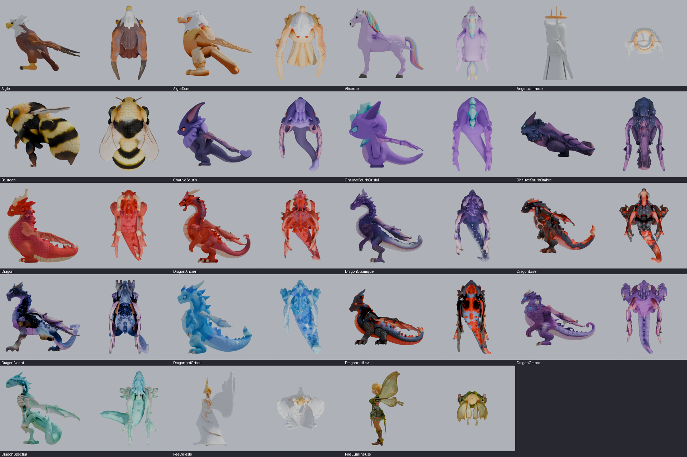
Aigle → Fée Lumineuse
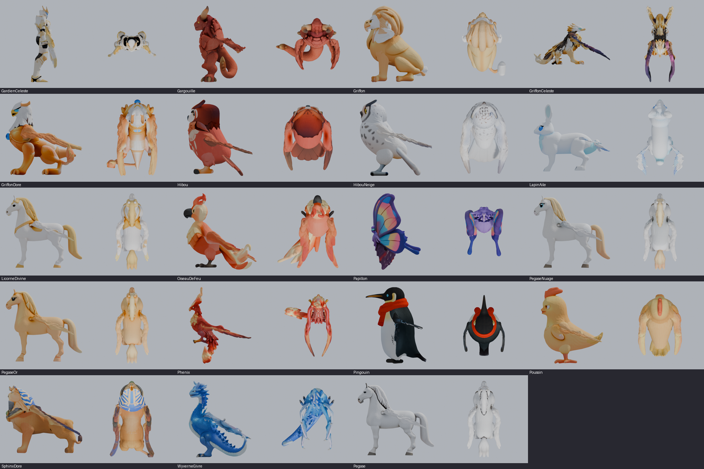
Gardien Céleste → Pégase
(version 1, refusée)
La cause : toutes les créatures ailées utilisaient la même rotation pour replier leurs ailes. Or chaque modèle a ses ailes dans une position de départ différente (relevées, en V, à plat, tournées…) : la même rotation donnait des ailes tordues, plantées dans le sol ou dressées en travers.
La correction : pour chacune des 38 créatures ailées, je mesure sa vraie aile (direction de l'épaule vers le bout, et sens de la surface), puis je calcule la rotation qui l'amène dans une pose naturelle :
- Oiseaux, dragons, chevaux ailés, griffons, chauves-souris, sphinx : ailes couchées le long du flanc, bout vers l'arrière et un peu vers le bas, surface tournée vers l'extérieur.
- Papillon, bourdon, fées : ailes posées à plat sur le dos, vers l'arrière.
- Ange, gardien céleste : ailes tombantes dans le dos.
En vol, rien ne change : les ailes s'ouvrent à l'horizontale et battent comme avant. Au repos, elles gardent un petit frémissement de temps en temps.
Avant · après (en jeu)

Avant : aile gauche tendue en travers

Après : les deux ailes rabattues vers l'arrière

Avant : aile dressée à la verticale

Après : ailes repliées contre le corps
Autres créatures, après

Aigle de profil

Dragon de profil : l'aile se plie le long du flanc

Pégase

Chauve-Souris

Papillon : ailes à plat sur le dos

Ange Lumineux : ailes tombantes

En vol : inchangé, ailes ouvertes